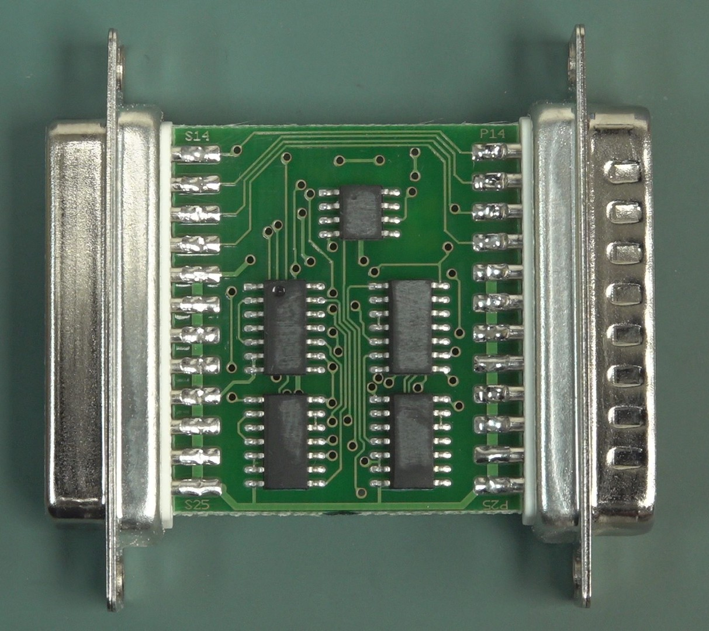
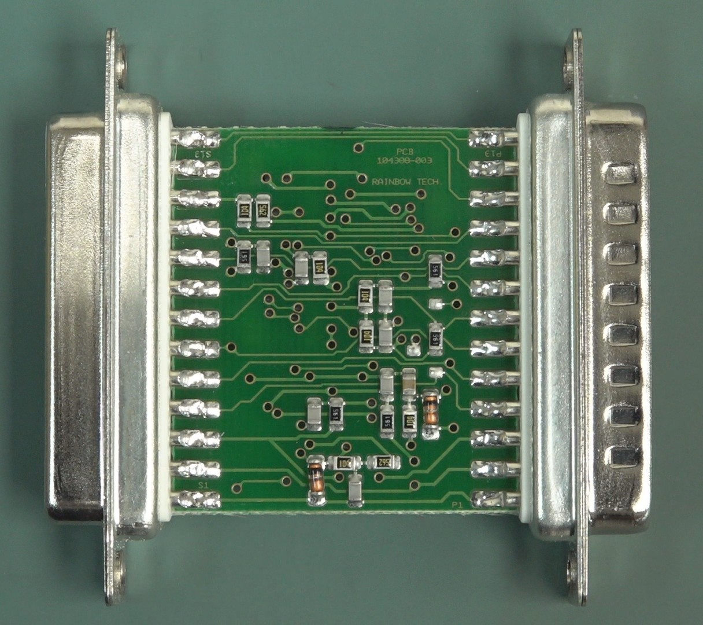
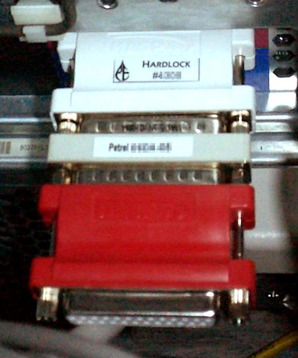

Rainbow Sentinel Dongle
When software came with a physical key you had to plug into your printer port

Overview
The Rainbow Sentinel was a hardware key for software: a small plastic block that plugged into the parallel (printer) port of an IBM PC. Without this specific physical object, protected software — typically expensive packages like AutoCAD, CorelDRAW, and Cubase — simply refused to run. It wasn't a password, a license file, or a serial number. It was a physical lock for a thing made of pure information. Internally, a custom integrated circuit with deliberately ground-off part numbers responded to cryptographic challenges from the host software. Multiple dongles could be daisy-chained. Jerry Pournelle captured the user experience in BYTE magazine in 1988: "I don't know what the thing is doing... For all I know, the gizmo may infect my machine with a virus." The Sentinel line continues today as Thales Sentinel, and its descendants — including the iLok used by professional audio software — still enforce the principle that the most reliable security is something you can touch.
Deep dive
Rainbow Technologies was founded in 1984 by Walter W. Straub in Irvine, California. The Sentinel hardware key plugged into a PC's DB-25 parallel port, with a pass-through connector for the printer. The main competitor was Aladdin Knowledge Systems, who introduced the HASP dongle in 1985, creating a Rainbow/Aladdin duopoly. Rainbow went public on NASDAQ in 1990 and merged with SafeNet in 2004; the brand passed through Gemalto to Thales Group.
A rectangular plastic block 2–3 inches long with male DB-25 on one end, female on the other. Inside: a custom EPROM or microcontroller with a unique ID and cryptographic algorithm. Teardowns reveal deliberately ground-off chip numbers — physical anti-reverse-engineering. The dongle drew power from the parallel port and sat transparently in the data path, responding only to challenge sequences.
The dongle's interaction model was brutally simple: no dongle, no software. It enforced copy protection at the physical layer in a way no serial number could. Users developed rituals around dongle management: safekeeping, transporting to client sites, panicking before deadlines. Lost or damaged dongles meant contacting the vendor with purchase records and paying for replacements. The dongle was also a source of technical conflicts — it could interfere with other parallel-port devices or fail from static discharge.
In a 1992 BYTE magazine ad, Rainbow Technologies claimed the word "dongle" was named after a person called "Don Gall." Linguist Ben Zimmer later noted the claim was so egregiously false that the company admitted it was a marketing ploy when pressed — spawning an urban legend that persists today. The actual etymology is disputed, with sources pointing to 1970s British slang for a plug or connector.
The hardware dongle persisted through the 1990s into the 2000s, with USB replacing parallel ports. The iLok, widely used in professional audio (Pro Tools, Waves plug-ins), is the direct descendant. The concept also influenced hardware-based security more broadly: TPM chips, smart card authentication, YubiKeys, and hardware security modules all share conceptual DNA with the parallel-port Sentinel dongle.
Team & pioneers
- Walter W. Straub Founder, Chairman, and CEO of Rainbow Technologies. Founded the company in 1984 to develop the Sentinel product line.
- Rainbow Technologies Irvine, California company. Went public (NASDAQ: RNBO) in 1990. Merged with SafeNet in 2004. The Sentinel brand is now owned by Thales Group.
Media


Sources
- Wikipedia: Software protection dongle
- Wikipedia: Rainbow Technologies (redirect to SafeNet)
- BYTE Magazine, July 1988: Jerry Pournelle column "Dr. Pournelle vs. The Virus", pp. 197–207
- BYTE Magazine, August 1992: Rainbow Technologies ad claiming "Don Gall" origin, p. 133
- Wikipedia: Dongle (etymology and examples)